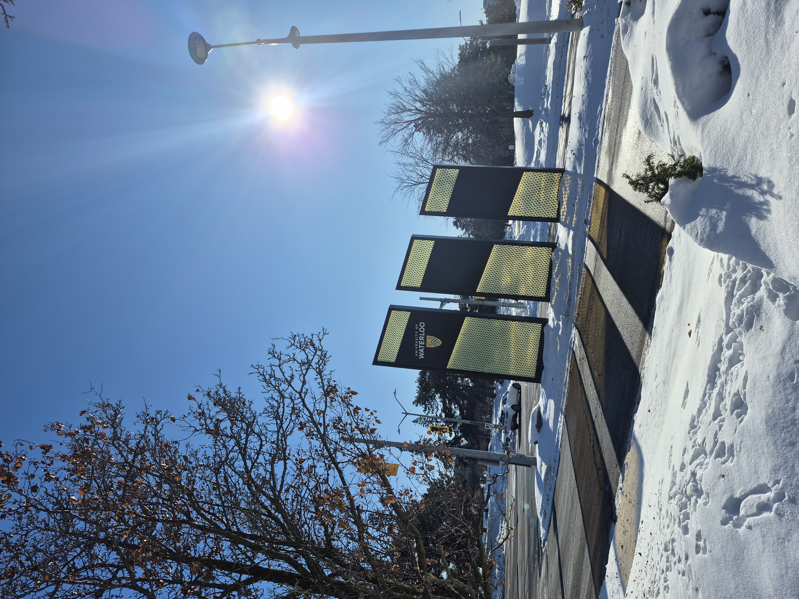

UCEY — Planner-facing Interface
Urban planning web app to locate and estimate costs for underutilized sites using TypeScript and React. I owned the front end and map-driven API integration.
Who is Daniel Jang?
I study Computer Science at Waterloo with a focus on cybersecurity — I care about building secure, thoughtful systems as tech spreads everywhere. I’m also into software dev and data science.
What else should I know?
I thrive on collaborative teams and problems that need both technical depth and creative thinking.
Quick facts?


Tap a platter or click — drag in a circle on ‹ for previous and › for next project.
Urban planning web app to locate and estimate costs for underutilized sites using TypeScript and React. I owned the front end and map-driven API integration.